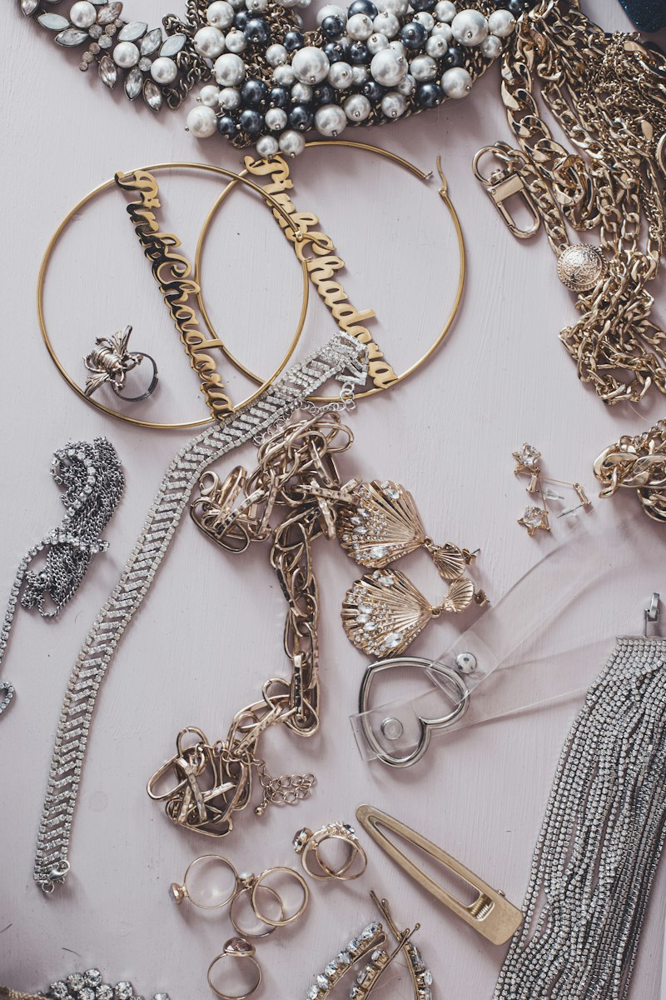

Tentang UMKM Jabutas
Mengenal lebih dekat perjalanan kami dalam melestarikan warisan kain tenun Nusantara melalui inovasi produk fashion modern.

Dari Sabina Collection Menuju Identitas Baru Jabutas
Perjalanan Jabutas bermula pada tahun 2017 di Kota Medan dengan nama awal Sabina Collection. Pada masa awal berdirinya, usaha ini lahir dari kepedulian mendalam terhadap kain tradisional Ulos dan tenun Nusantara yang kerap dianggap hanya cocok dikenakan pada upacara adat atau acara resmi semata. Kami melihat peluang besar untuk mengolah lembaran wastra bernilai seni tinggi tersebut menjadi produk fashion yang lebih dekat dengan keseharian masyarakat modern.
Seiring meningkatnya antusiasme pelanggan dari berbagai daerah di Indonesia, Sabina Collection melakukan langkah strategis berupa rebranding menjadi JABUTAS. Transformasi nama ini membawa semangat baru untuk menjadikan tas etnik lokal sebagai simbol kebanggaan identitas bangsa yang berkelas tanpa batas. Hingga kini, Jabutas terus berkolaborasi erat dengan para penenun tradisional di Sumatera Utara untuk menjaga keaslian motif sekaligus memberdayakan ekonomi pengrajin lokal.
"Kami percaya bahwa tas bukan sekadar pelengkap penampilan, melainkan medium untuk bercerita tentang kekayaan budaya dan identitas Indonesia kepada dunia."
Visi Kami
Arah jangka panjang pengembangan brand Jabutas
- 1 Menjadikan Jabutas sebagai brand tas etnik modern unggulan yang mengangkat nilai budaya kain tradisional Indonesia ke dalam gaya hidup generasi masa kini.
- 2 Mewujudkan produk fashion lokal yang tidak hanya bernilai estetika tinggi, tetapi juga menjadi simbol kebanggaan terhadap warisan wastra Nusantara.
- 3 Memperluas jangkauan pasar produk UMKM kerajinan tangan Sumatera Utara hingga menembus pasar nasional dan mancanegara.
Misi Kami
Langkah nyata yang kami jalankan setiap hari
- Menghadirkan desain tas berbahan kain tenun tradisional yang modern, fungsional, dan relevan untuk aktivitas kuliah, kerja, hingga acara formal.
- Membangun kemitraan berkelanjutan dengan para pengrajin tenun lokal sebagai bentuk dukungan nyata terhadap pelestarian budaya dan kesejahteraan pengrajin.
- Mengutamakan kualitas bahan baku kulit sintetis premium, aksesoris logam kokoh, dan jahitan presisi demi ketahanan pakai jangka panjang.
- Mengedukasi generasi muda mengenai makna filosofis di balik setiap motif tenun Ulos melalui media digital yang kreatif.
Struktur Organisasi & Profil Pemilik
Dikelola secara profesional dengan pembagian peran yang jelas antara manajemen kreatif, produksi pengrajin, dan pemasaran digital.
Ibu Sabina
Pendiri Sabina Collection sejak 2017 yang merancang kurasi motif kain Ulos serta menjaga standar kualitas setiap koleksi Jabutas.
Tim Pengrajin Medan
Bertanggung jawab atas pemotongan pola presisi, perakitan struktur tas, dan quality control jahitan tangan.
Sentra Tenun Sumut
Pemasok lembaran kain Ulos Ragihotang, Sadum, dan tenun tradisional asli yang ditenun menggunakan alat tenun bukan mesin.
Tim Pemasaran Digital
Mengelola katalog online, layanan konsultasi pesanan custom via WhatsApp, serta pengiriman ke seluruh Indonesia.